이 전략의 진입 조건
- 30주선 크로스오버 — 주봉 종가가 30주 이동평균을 그 주에 처음 넘을 것(직전 주까지는 아래에 있어야 하며, 이미 위에 있던 종목은 신호가 아닙니다)
- 거래량 급증 — 그 주의 최고 일별 거래량이 직전 20거래일 평균의 2배 이상일 것 (원서 조건 그대로: "일주일 동안의 최고 거래량이 지난달 평균 거래량보다 최소 2배")
- 맨스필드 RS ≥ 0 — 지수 대비 상대강도가 자기 52주 이동평균 위에 있을 것 (코스피 종목은 코스피, 코스닥은 코스닥, 미국은 S&P500 기준)
자세히 — 한계와 주의사항
세 조건을 모두 만족해야 신호가 납니다. 순위는 거래량 배수 내림차순이고 상위 30종목만 표시합니다.
RS 게이트에는 예외가 있습니다. RS를 계산할 수 없으면(상장 후 52주 미만 등) 게이트를 걸지 않고 통과시킵니다 — 현재 신호의 약 6%입니다. 2026-09-06 이전에는 이 값이 35%였습니다(백테스트용 지수를 8년치만 받아와 앞 3~4년의 RS가 통째로 비어 있었습니다).
성과 수치를 근거로 삼지 마세요. 진입 조건을 전혀 바꾸지 않고 백테스트 기간만 ±7% 흔들어도 10년 CAGR이 7.75%~21.88%로 움직입니다(폭 14.1%p). 조건을 바꿔서 얻는 차이(11.4%p)보다 큽니다. 지금 조합은 '최선이라서'가 아니라 '바꿀 근거가 없어서' 유지하는 것입니다 — reports/weinstein_entry_rules_decision_log.md §5⑫.
이미 기각된 방향: 베이스 저항선 돌파, 원서②(3~4주 누적 거래량), 30주선 비하락, 주간 총거래량 기준. 근거는 같은 문서 §4에 있습니다.
특수 목적용 기계 제조업
업종 참고: RS 평균 59/99(업종 중 상위 19%) · 오늘 신호 8건 · 업종 평균이 코스닥 대비 +37.9%p(126일), 종목별 편차 ±61%p
🧪 자체 섹터 분류(실험적, 참고용): 특수 목적용 기계 제조업 (GST·프로텍 등 18종목)
섹터 내 RS 순위: 2/18위 (RS 91/99)
섹터 1~3위: GST(96), 프로텍(91), HPSP(87)
※ 자체 상관관계 계산(최근 1년) — 검증 시 기준업종 11개 중 8개 정확. 주 단위로 구성종목이 일부 바뀔 수 있음(주간 일치도 실측 0.53)
종가 76,100 · 거래대금 41억
거래량비 5.0x맨스필드RS +54.8
손절 70,773 | 목표 92,081 | 수량 131주
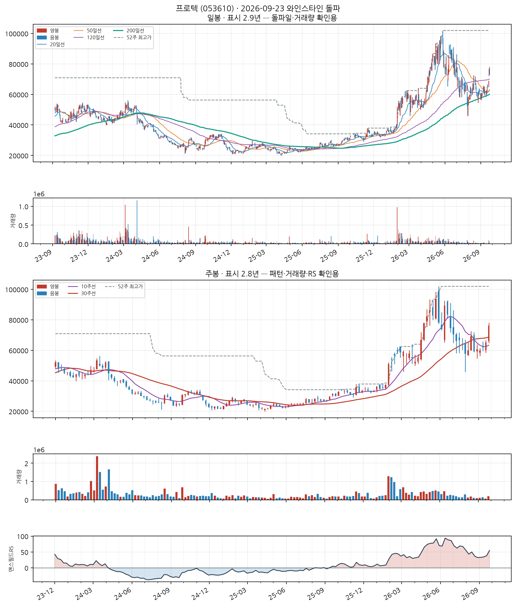
📐 차트 패턴 판정: 후보 없음 후보 없음 판정 기준(PDF)
세 패턴 모두 필수 조건을 채운 후보가 없다(가장 가까운 컵위드핸들 후보: 림 대칭: 좌우 림 차이 26.3% — 오른쪽 림이 낮음, 20% 초과).
가장 강한 반증 컵위드핸들: 림 대칭: 좌우 림 차이 26.3% — 오른쪽 림이 낮음, 20% 초과; 이중바닥: 두 저점 일치: 저점 차이 70.8% — 같은 지지대로 보기 어려움(10% 초과); 역헤드앤숄더: 어깨 대칭: 어깨 높이차 67.9% — 과도(25% 초과)
경쟁 후보·더 단순한 설명 더 단순한 설명: 최근 26주 상승 추세 지속(+12.6%) — 베이스 없음
추가로 필요한 데이터 장중 고저 기준 깊이(여기 수치는 주봉 종가 기준) · 이번 주 완결 주봉(2026-09-25 라벨) — 미완결이라 판정에서 제외
패턴만으로 매수 추천이나 목표 달성 확률을 만들지 않습니다. 수치 기준은 잠정치이며 라벨 데이터로 검증되지 않았습니다.
반도체 제조업
업종 참고: RS 평균 70/99(업종 중 상위 4%) · 오늘 신호 3건 · 업종 평균이 코스닥 대비 +56.4%p(126일), 종목별 편차 ±60%p
🧪 자체 섹터 분류(실험적, 참고용): 특수 목적용 기계 제조업 (제주반도체·SFA반도체 등 13종목)
섹터 내 RS 순위: 9/13위 (RS 59/99)
섹터 1~3위: 제주반도체(96), SFA반도체(94), 엑시콘(94)
※ 자체 상관관계 계산(최근 1년) — 검증 시 기준업종 11개 중 8개 정확. 주 단위로 구성종목이 일부 바뀔 수 있음(주간 일치도 실측 0.53)
종가 27,650 · 거래대금 102억
거래량비 4.1x맨스필드RS +30.9
손절 25,714 | 목표 33,456 | 수량 361주
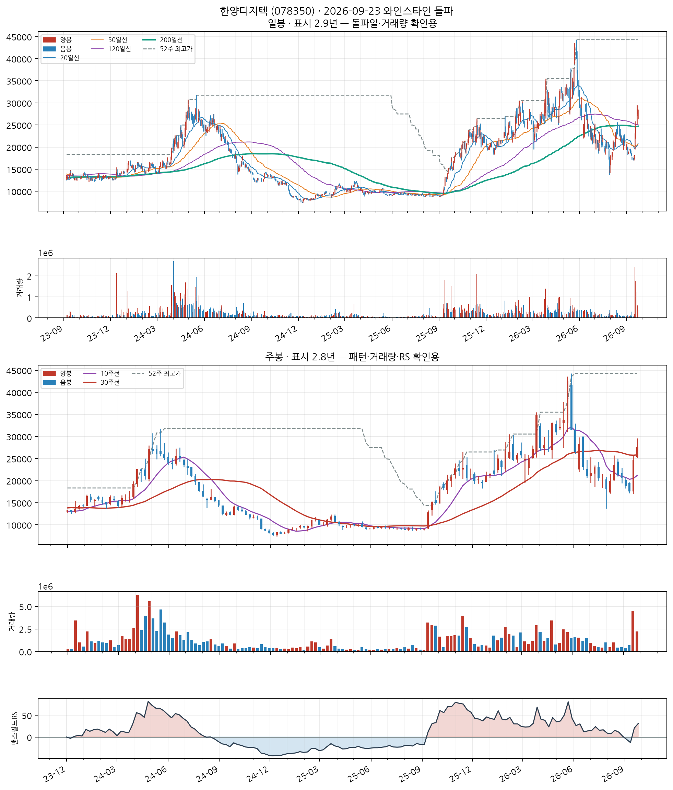
📐 차트 패턴: 약한 유사 — 이중바닥 돌파 확인 확신 낮음 판정 기준(PDF)
두 저점(18,070/17,560) 뒤 중간 고점 23,550를 종가로 넘었다.
가장 강한 반증 선행 추세: 선행 추세가 상승(+105.3%) — 상승 중 눌림일 수 있어 반전형 전제가 없다
경쟁 후보·더 단순한 설명 더 단순한 설명: 선행 하락이 없어 반전형이 아니라 상승 추세 중 눌림(조정)일 수 있다
측정표 (주봉 종가 기준, 판정일 2026-09-23 이후 데이터 미사용)
조건별 판정
- 미충족 선행 추세 — 선행 추세가 상승(+105.3%) — 상승 중 눌림일 수 있어 반전형 전제가 없다
- 충족 두 저점 일치 — 저점 차이 2.8% ≤ 6% · 두 번째 저점이 첫 저점을 언더컷(IBD 선호)
- 부분충족 중간 반등 — 중간 반등 34.1% — 30%를 넘어 W가 아니라 독립된 두 파동일 수 있음
- 충족 기간 — 베이스 17주 ≥ 7주
- 미충족 깊이 — 베이스 깊이 58.7% — 50% 초과
- 부분충족 저점2 매도 약화 — 저점2 부근 거래량 = 저점1 부근의 2.96배
- 충족 최근성 — 돌파 주(2026-09-18)가 0주 전
- 충족 넥라인 돌파 — 2026-09-18 주 종가 24,700 > 확인선
- 충족 돌파 거래량 — 돌파 주 거래량 = 직전 10주 평균의 7.42배
추가로 필요한 데이터 장중 고저 기준 깊이(여기 수치는 주봉 종가 기준) · 이번 주 완결 주봉(2026-09-25 라벨) — 미완결이라 판정에서 제외
패턴만으로 매수 추천이나 목표 달성 확률을 만들지 않습니다. 수치 기준은 잠정치이며 라벨 데이터로 검증되지 않았습니다.
특수 목적용 기계 제조업
업종 참고: RS 평균 59/99(업종 중 상위 19%) · 오늘 신호 8건 · 업종 평균이 코스닥 대비 +37.9%p(126일), 종목별 편차 ±61%p
🧪 자체 섹터 분류(실험적, 참고용): 특수 목적용 기계 제조업 (제주반도체·SFA반도체 등 13종목)
섹터 내 RS 순위: 11/13위 (RS 47/99)
섹터 1~3위: 제주반도체(96), SFA반도체(94), 엑시콘(94)
※ 자체 상관관계 계산(최근 1년) — 검증 시 기준업종 11개 중 8개 정확. 주 단위로 구성종목이 일부 바뀔 수 있음(주간 일치도 실측 0.53)
종가 12,870 · 거래대금 280억
거래량비 12.4x맨스필드RS +7.1
손절 11,969 | 목표 15,573 | 수량 777주
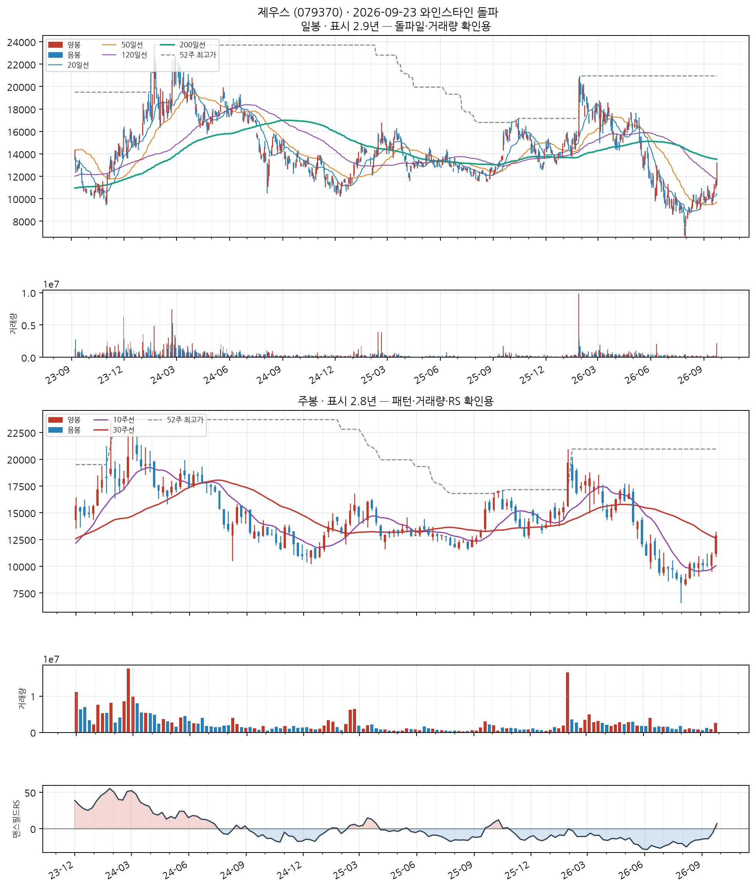
📐 차트 패턴 판정: 후보 없음 후보 없음 판정 기준(PDF)
세 패턴 모두 필수 조건을 채운 후보가 없다(가장 가까운 컵위드핸들 후보: 깊이: 컵 깊이 50.4% — 기준 12%~33%(고변동 최대 50%)를 벗어남).
가장 강한 반증 컵위드핸들: 깊이: 컵 깊이 50.4% — 기준 12%~33%(고변동 최대 50%)를 벗어남; 이중바닥: 두 저점 일치: 저점 차이 42.0% — 같은 지지대로 보기 어려움(10% 초과)
경쟁 후보·더 단순한 설명 더 단순한 설명: 최근 26주 하락 추세 지속(-36.7%) — 베이스 없음
추가로 필요한 데이터 장중 고저 기준 깊이(여기 수치는 주봉 종가 기준) · 이번 주 완결 주봉(2026-09-25 라벨) — 미완결이라 판정에서 제외
패턴만으로 매수 추천이나 목표 달성 확률을 만들지 않습니다. 수치 기준은 잠정치이며 라벨 데이터로 검증되지 않았습니다.
한솔아이원스 (114810)
신규
KOSDAQ
특수 목적용 기계 제조업
업종 참고: RS 평균 59/99(업종 중 상위 19%) · 오늘 신호 8건 · 업종 평균이 코스닥 대비 +37.9%p(126일), 종목별 편차 ±61%p
🧪 자체 섹터 분류(실험적, 참고용): 마이크로컨텍솔·케이씨텍 등 12종목 (업종 혼재)
섹터 내 RS 순위: 6/12위 (RS 77/99)
섹터 1~3위: 마이크로컨텍솔(96), 케이씨텍(95), 케이씨(90)
※ 자체 상관관계 계산(최근 1년) — 검증 시 기준업종 11개 중 8개 정확. 주 단위로 구성종목이 일부 바뀔 수 있음(주간 일치도 실측 0.53)
종가 14,630 · 거래대금 70억
거래량비 2.5x맨스필드RS +21.9
손절 13,606 | 목표 17,702 | 수량 683주
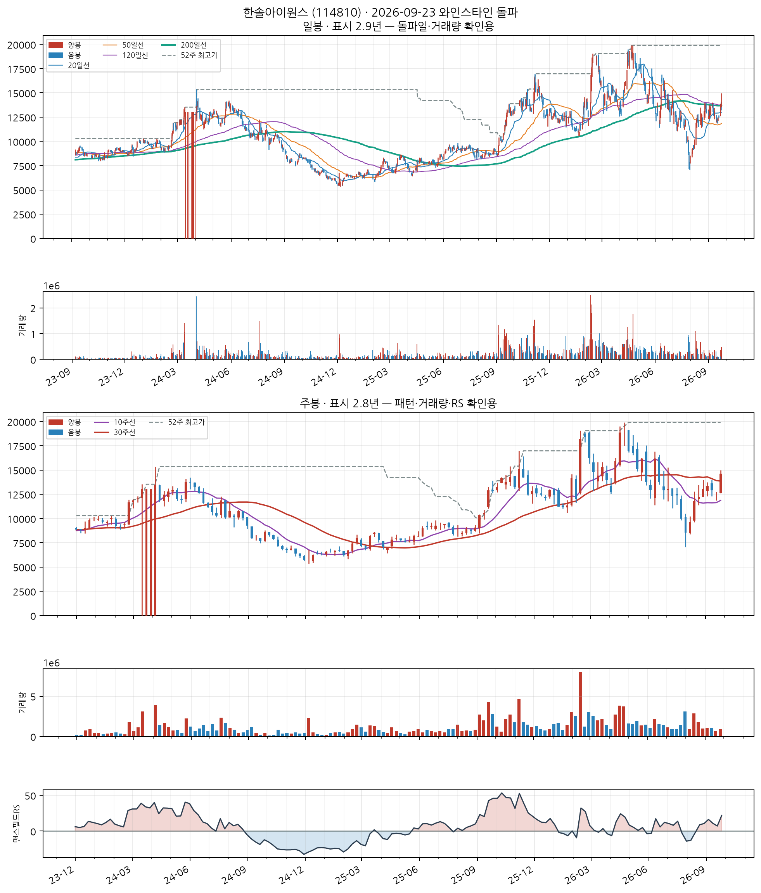
📐 차트 패턴 판정: 후보 없음 후보 없음 판정 기준(PDF)
세 패턴 모두 필수 조건을 채운 후보가 없다(가장 가까운 컵위드핸들 후보: 핸들: 핸들 저점 12,950가 컵 중간값 15,785 아래 — 핸들이 아니라 컵 재하락).
가장 강한 반증 컵위드핸들: 핸들: 핸들 저점 12,950가 컵 중간값 15,785 아래 — 핸들이 아니라 컵 재하락; 이중바닥: 두 저점 일치: 저점 차이 32.9% — 같은 지지대로 보기 어려움(10% 초과)
경쟁 후보·더 단순한 설명 더 단순한 설명: 최근 26주 하락 추세 지속(-17.9%) — 베이스 없음
추가로 필요한 데이터 장중 고저 기준 깊이(여기 수치는 주봉 종가 기준) · 이번 주 완결 주봉(2026-09-25 라벨) — 미완결이라 판정에서 제외
패턴만으로 매수 추천이나 목표 달성 확률을 만들지 않습니다. 수치 기준은 잠정치이며 라벨 데이터로 검증되지 않았습니다.
반도체 제조업
업종 참고: RS 평균 70/99(업종 중 상위 4%) · 오늘 신호 3건 · 업종 평균이 코스닥 대비 +56.4%p(126일), 종목별 편차 ±60%p
🧪 자체 섹터 분류(실험적, 참고용): 특수 목적용 기계 제조업 (제주반도체·SFA반도체 등 13종목)
섹터 내 RS 순위: 6/13위 (RS 82/99)
섹터 1~3위: 제주반도체(96), SFA반도체(94), 엑시콘(94)
※ 자체 상관관계 계산(최근 1년) — 검증 시 기준업종 11개 중 8개 정확. 주 단위로 구성종목이 일부 바뀔 수 있음(주간 일치도 실측 0.53)
종가 8,240 · 거래대금 75억
거래량비 2.3x맨스필드RS +36.1
손절 7,663 | 목표 9,970 | 수량 1,213주
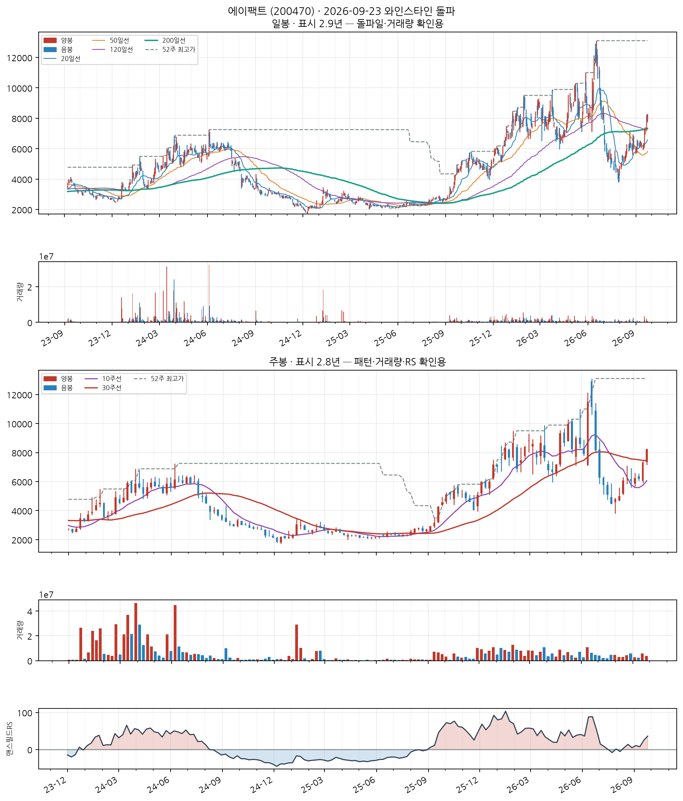
📐 차트 패턴 판정: 후보 없음 후보 없음 판정 기준(PDF)
세 패턴 모두 필수 조건을 채운 후보가 없다(가장 가까운 컵위드핸들 후보: 핸들: 핸들 저점 4,460가 컵 중간값 9,700 아래 — 핸들이 아니라 컵 재하락).
가장 강한 반증 컵위드핸들: 핸들: 핸들 저점 4,460가 컵 중간값 9,700 아래 — 핸들이 아니라 컵 재하락; 역헤드앤숄더: 최근성: 돌파가 14주 전(2026-06-12) — 기준 8주 이내, 이미 지난 베이스(확인선 대비 -39.7%); 이중바닥: 최근성: 돌파가 21주 전(2026-04-24) — 기준 8주 이내, 이미 지난 베이스(확인선 대비 -17.4%)
경쟁 후보·더 단순한 설명 더 단순한 설명: 최근 26주 하락 추세 지속(-15.5%) — 베이스 없음
추가로 필요한 데이터 장중 고저 기준 깊이(여기 수치는 주봉 종가 기준) · 이번 주 완결 주봉(2026-09-25 라벨) — 미완결이라 판정에서 제외
패턴만으로 매수 추천이나 목표 달성 확률을 만들지 않습니다. 수치 기준은 잠정치이며 라벨 데이터로 검증되지 않았습니다.
특수 목적용 기계 제조업
업종 참고: RS 평균 59/99(업종 중 상위 19%) · 오늘 신호 8건 · 업종 평균이 코스닥 대비 +37.9%p(126일), 종목별 편차 ±61%p
🧪 자체 섹터 분류(실험적, 참고용): 특수 목적용 기계 제조업 (테스·피에스케이 등 6종목)
섹터 내 RS 순위: 6/6위 (RS 83/99)
섹터 1~3위: 테스(98), 피에스케이(95), 피에스케이홀딩스(94)
※ 자체 상관관계 계산(최근 1년) — 검증 시 기준업종 11개 중 8개 정확. 주 단위로 구성종목이 일부 바뀔 수 있음(주간 일치도 실측 0.53)
종가 132,400 · 거래대금 3,421억
거래량비 3.5x맨스필드RS +45.8
손절 123,132 | 목표 160,204 | 수량 75주
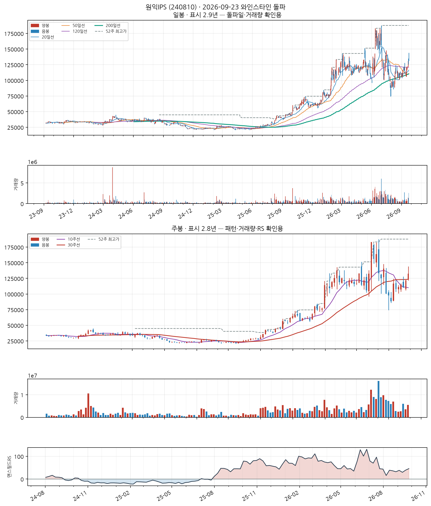
📐 차트 패턴 판정: 후보 없음 후보 없음 판정 기준(PDF)
세 패턴 모두 필수 조건을 채운 후보가 없다(가장 가까운 컵위드핸들 후보: 림 대칭: 좌우 림 차이 24.8% — 오른쪽 림이 높음, 20% 초과).
가장 강한 반증 컵위드핸들: 림 대칭: 좌우 림 차이 24.8% — 오른쪽 림이 높음, 20% 초과; 이중바닥: 두 저점 일치: 저점 차이 16.7% — 같은 지지대로 보기 어려움(10% 초과)
경쟁 후보·더 단순한 설명 더 단순한 설명: 최근 26주 하락 추세 지속(-2.8%) — 베이스 없음
추가로 필요한 데이터 장중 고저 기준 깊이(여기 수치는 주봉 종가 기준) · 이번 주 완결 주봉(2026-09-25 라벨) — 미완결이라 판정에서 제외
패턴만으로 매수 추천이나 목표 달성 확률을 만들지 않습니다. 수치 기준은 잠정치이며 라벨 데이터로 검증되지 않았습니다.
전자부품 제조업
업종 참고: RS 평균 58/99(업종 중 상위 21%) · 오늘 신호 5건 · 업종 평균이 코스닥 대비 +41.7%p(126일), 종목별 편차 ±64%p
🧪 자체 섹터 분류(실험적, 참고용): 전자부품 제조업 (심텍·심텍홀딩스 등 6종목)
섹터 내 RS 순위: 3/6위 (RS 91/99)
섹터 1~3위: 심텍(98), 심텍홀딩스(95), 대덕전자(91)
※ 자체 상관관계 계산(최근 1년) — 검증 시 기준업종 11개 중 8개 정확. 주 단위로 구성종목이 일부 바뀔 수 있음(주간 일치도 실측 0.53)
종가 119,200 · 거래대금 1,882억
거래량비 3.8x맨스필드RS +20.7
손절 110,856 | 목표 144,232 | 수량 83주
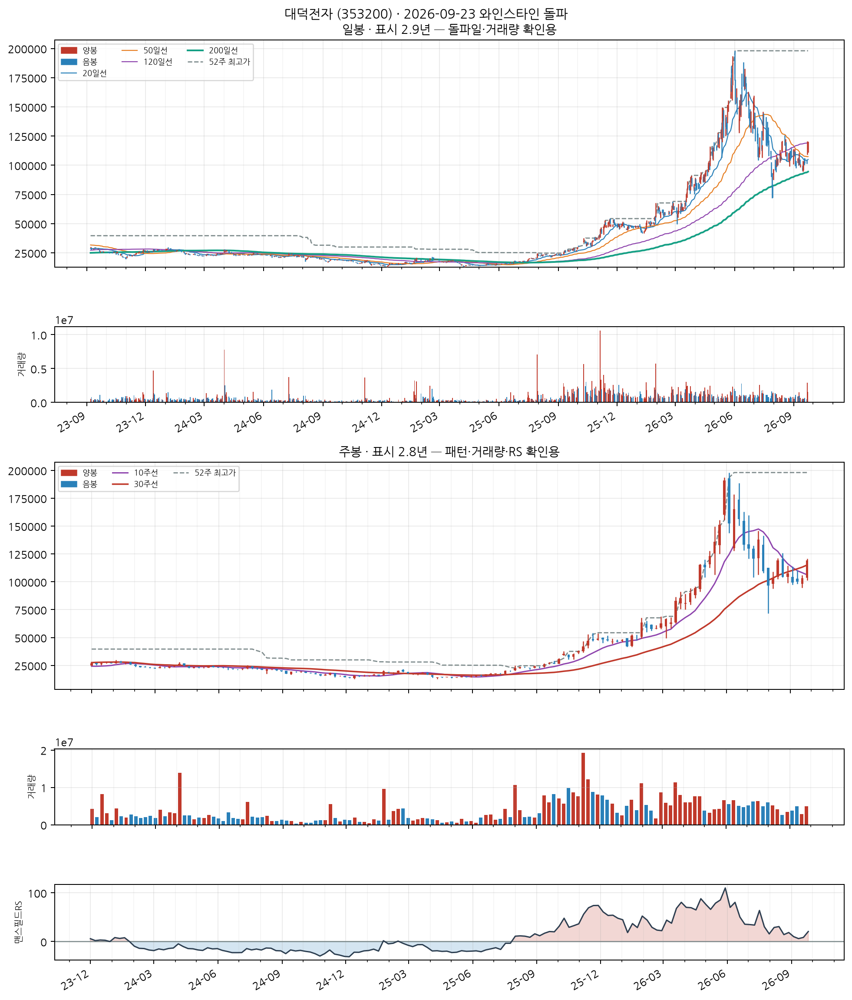
📐 차트 패턴 판정: 후보 없음 후보 없음 판정 기준(PDF)
세 패턴 모두 필수 조건을 채운 후보가 없다(가장 가까운 컵위드핸들 후보: 림 대칭: 좌우 림 차이 46.0% — 오른쪽 림이 낮음, 20% 초과).
가장 강한 반증 컵위드핸들: 림 대칭: 좌우 림 차이 46.0% — 오른쪽 림이 낮음, 20% 초과; 이중바닥: 두 저점 일치: 저점 차이 74.1% — 같은 지지대로 보기 어려움(10% 초과)
경쟁 후보·더 단순한 설명 더 단순한 설명: 최근 26주 상승 추세 지속(+24.5%) — 베이스 없음
추가로 필요한 데이터 장중 고저 기준 깊이(여기 수치는 주봉 종가 기준) · 이번 주 완결 주봉(2026-09-25 라벨) — 미완결이라 판정에서 제외
패턴만으로 매수 추천이나 목표 달성 확률을 만들지 않습니다. 수치 기준은 잠정치이며 라벨 데이터로 검증되지 않았습니다.
전자부품 제조업
업종 참고: RS 평균 58/99(업종 중 상위 21%) · 오늘 신호 5건 · 업종 평균이 코스닥 대비 +41.7%p(126일), 종목별 편차 ±64%p
🧪 자체 섹터 분류(실험적, 참고용): 전자부품 제조업 (심텍·심텍홀딩스 등 6종목)
섹터 내 RS 순위: 4/6위 (RS 90/99)
섹터 1~3위: 심텍(98), 심텍홀딩스(95), 대덕전자(91)
※ 자체 상관관계 계산(최근 1년) — 검증 시 기준업종 11개 중 8개 정확. 주 단위로 구성종목이 일부 바뀔 수 있음(주간 일치도 실측 0.53)
종가 44,750 · 거래대금 259억
거래량비 4.0x맨스필드RS +45.3
손절 41,618 | 목표 54,148 | 수량 223주
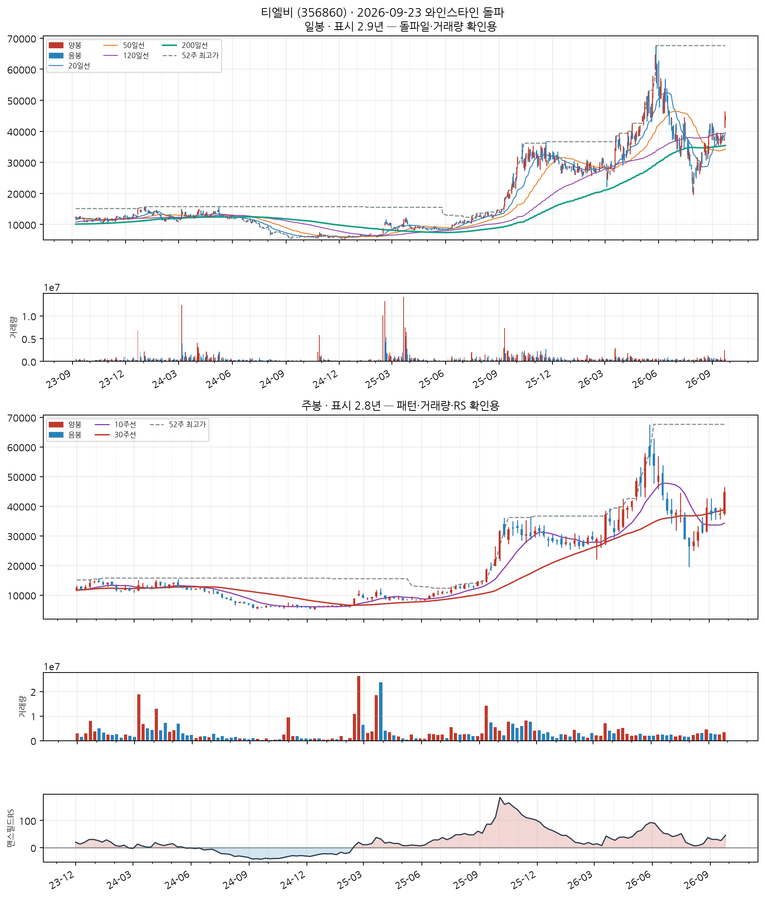
📐 차트 패턴 판정: 후보 없음 후보 없음 판정 기준(PDF)
세 패턴 모두 필수 조건을 채운 후보가 없다(가장 가까운 이중바닥 후보: 두 저점 일치: 저점 차이 79.1% — 같은 지지대로 보기 어려움(10% 초과)).
가장 강한 반증 이중바닥: 두 저점 일치: 저점 차이 79.1% — 같은 지지대로 보기 어려움(10% 초과)
경쟁 후보·더 단순한 설명 더 단순한 설명: 최근 26주 상승 추세 지속(+0.6%) — 베이스 없음
추가로 필요한 데이터 장중 고저 기준 깊이(여기 수치는 주봉 종가 기준) · 이번 주 완결 주봉(2026-09-25 라벨) — 미완결이라 판정에서 제외
패턴만으로 매수 추천이나 목표 달성 확률을 만들지 않습니다. 수치 기준은 잠정치이며 라벨 데이터로 검증되지 않았습니다.
특수 목적용 기계 제조업
업종 참고: RS 평균 59/99(업종 중 상위 19%) · 오늘 신호 8건 · 업종 평균이 코스닥 대비 +37.9%p(126일), 종목별 편차 ±61%p
🧪 자체 섹터 분류(실험적, 참고용): 아스플로·한솔테크닉스 등 13종목 (업종 혼재)
섹터 내 RS 순위: 3/13위 (RS 94/99)
섹터 1~3위: 아스플로(99), 한솔테크닉스(97), 기가비스(94)
※ 자체 상관관계 계산(최근 1년) — 검증 시 기준업종 11개 중 8개 정확. 주 단위로 구성종목이 일부 바뀔 수 있음(주간 일치도 실측 0.53)
종가 123,100 · 거래대금 132억
거래량비 2.7x맨스필드RS +65.2
손절 114,483 | 목표 148,951 | 수량 81주
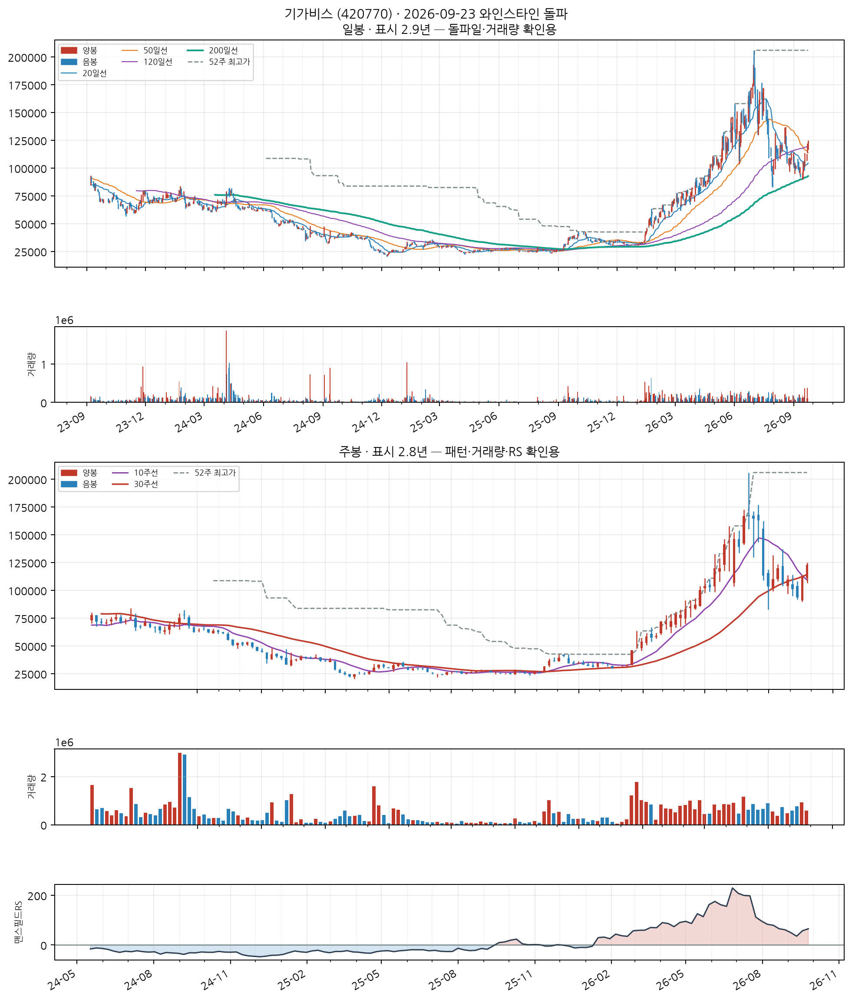
📐 차트 패턴 판정: 후보 없음 후보 없음 판정 기준(PDF)
세 패턴 모두 필수 조건을 채운 후보가 없다(가장 가까운 컵위드핸들 후보: 림 대칭: 좌우 림 차이 32.9% — 오른쪽 림이 낮음, 20% 초과).
가장 강한 반증 컵위드핸들: 림 대칭: 좌우 림 차이 32.9% — 오른쪽 림이 낮음, 20% 초과; 이중바닥: 두 저점 일치: 저점 차이 75.7% — 같은 지지대로 보기 어려움(10% 초과)
경쟁 후보·더 단순한 설명 더 단순한 설명: 최근 26주 상승 추세 지속(+42.4%) — 베이스 없음
추가로 필요한 데이터 장중 고저 기준 깊이(여기 수치는 주봉 종가 기준) · 이번 주 완결 주봉(2026-09-25 라벨) — 미완결이라 판정에서 제외
패턴만으로 매수 추천이나 목표 달성 확률을 만들지 않습니다. 수치 기준은 잠정치이며 라벨 데이터로 검증되지 않았습니다.
기초 화학물질 제조업
업종 참고: RS 평균 49/99(업종 중 상위 54%) · 오늘 신호 1건 · 업종 평균이 코스피 대비 -43.3%p(126일), 종목별 편차 ±27%p
🧪 자체 섹터 분류(실험적, 참고용): 피델릭스·주성엔지니어링 등 17종목 (업종 혼재)
섹터 내 RS 순위: 14/17위 (RS 68/99)
섹터 1~3위: 피델릭스(99), 주성엔지니어링(99), 타이거일렉(98)
※ 자체 상관관계 계산(최근 1년) — 검증 시 기준업종 11개 중 8개 정확. 주 단위로 구성종목이 일부 바뀔 수 있음(주간 일치도 실측 0.53)
종가 12,950 · 거래대금 123억
거래량비 55.4x맨스필드RS +34.2
손절 12,044 | 목표 15,670 | 수량 772주
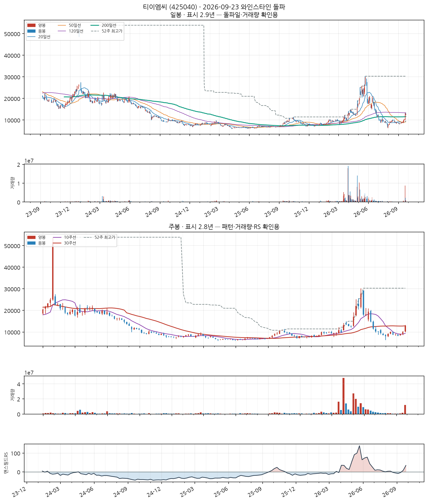
📐 차트 패턴 판정: 후보 없음 후보 없음 판정 기준(PDF)
세 패턴 모두 필수 조건을 채운 후보가 없다(가장 가까운 컵위드핸들 후보: 깊이: 컵 깊이 74.6% — 기준 12%~33%(고변동 최대 50%)를 벗어남).
가장 강한 반증 컵위드핸들: 깊이: 컵 깊이 74.6% — 기준 12%~33%(고변동 최대 50%)를 벗어남
경쟁 후보·더 단순한 설명 더 단순한 설명: 최근 26주 하락 추세 지속(-6.2%) — 베이스 없음
추가로 필요한 데이터 장중 고저 기준 깊이(여기 수치는 주봉 종가 기준) · 이번 주 완결 주봉(2026-09-25 라벨) — 미완결이라 판정에서 제외
패턴만으로 매수 추천이나 목표 달성 확률을 만들지 않습니다. 수치 기준은 잠정치이며 라벨 데이터로 검증되지 않았습니다.
반도체 제조업
업종 참고: RS 평균 70/99(업종 중 상위 4%) · 오늘 신호 3건 · 업종 평균이 코스닥 대비 +56.4%p(126일), 종목별 편차 ±60%p
🧪 자체 섹터 분류(실험적, 참고용): 전자부품 제조업 (파두·코세스 등 11종목)
섹터 내 RS 순위: 1/11위 (RS 93/99)
섹터 1~3위: 파두(93), 코세스(91), RF머트리얼즈(89)
※ 자체 상관관계 계산(최근 1년) — 검증 시 기준업종 11개 중 8개 정확. 주 단위로 구성종목이 일부 바뀔 수 있음(주간 일치도 실측 0.53)
종가 81,400 · 거래대금 1,041억
거래량비 3.1x맨스필드RS +67.6
손절 75,702 | 목표 98,494 | 수량 122주
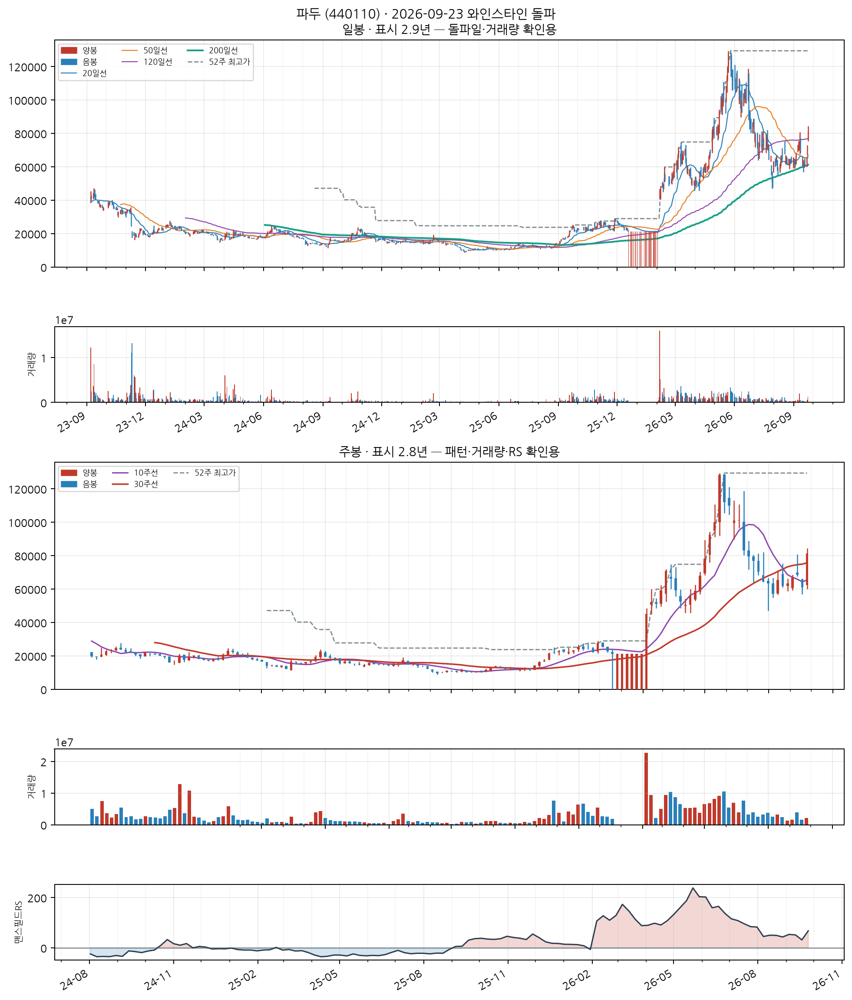
📐 차트 패턴 판정: 후보 없음 후보 없음 판정 기준(PDF)
세 패턴 모두 필수 조건을 채운 후보가 없다(가장 가까운 이중바닥 후보: 두 저점 일치: 저점 차이 17.2% — 같은 지지대로 보기 어려움(10% 초과)).
가장 강한 반증 이중바닥: 두 저점 일치: 저점 차이 17.2% — 같은 지지대로 보기 어려움(10% 초과); 컵위드핸들: 깊이: 컵 깊이 60.6% — 기준 12%~33%(고변동 최대 50%)를 벗어남
경쟁 후보·더 단순한 설명 더 단순한 설명: 최근 26주 상승 추세 지속(+3.0%) — 베이스 없음
추가로 필요한 데이터 장중 고저 기준 깊이(여기 수치는 주봉 종가 기준) · 이번 주 완결 주봉(2026-09-25 라벨) — 미완결이라 판정에서 제외
패턴만으로 매수 추천이나 목표 달성 확률을 만들지 않습니다. 수치 기준은 잠정치이며 라벨 데이터로 검증되지 않았습니다.
전기 통신업
업종 참고: RS 평균 68/99(업종 중 상위 6%) · 오늘 신호 2건 · 업종 평균이 코스피 대비 -28.7%p(126일), 종목별 편차 ±20%p
🧪 자체 섹터 분류(실험적, 참고용): 쿠콘·우리기술투자 등 11종목 (업종 혼재)
섹터 내 RS 순위: 3/11위 (RS 58/99)
섹터 1~3위: 쿠콘(65), 우리기술투자(62), 더즌(58)
※ 자체 상관관계 계산(최근 1년) — 검증 시 기준업종 11개 중 8개 정확. 주 단위로 구성종목이 일부 바뀔 수 있음(주간 일치도 실측 0.53)
종가 3,035 · 거래대금 89억
거래량비 3.8x맨스필드RS +1.9
손절 2,823 | 목표 3,672 | 수량 3,294주
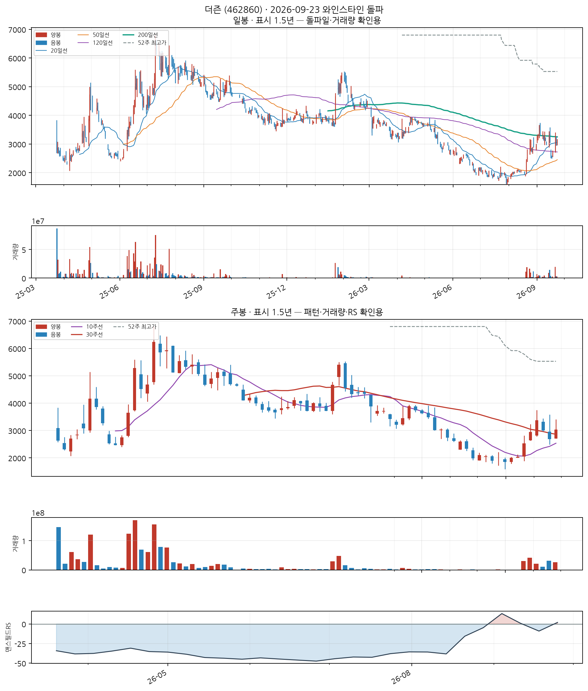
📐 차트 패턴: 약한 유사 — 역헤드앤숄더 형성 중 확신 낮음 판정 기준(PDF)
오른쪽 어깨(2,685) 부근에 머물러 있어 어깨가 완성됐다고 보기 이르다.
가장 강한 반증 어깨 대칭: 어깨 높이차 16.5% — 15% 초과
경쟁 후보·더 단순한 설명 없음
측정표 (주봉 종가 기준, 판정일 2026-09-23 이후 데이터 미사용)
조건별 판정
- 충족 선행 추세 — 선행 하락 -31.4% ≤ -15%
- 충족 머리 깊이 — 양 어깨 대비 최소 31.3% ≥ 3.5%
- 부분충족 어깨 대칭 — 어깨 높이차 16.5% — 15% 초과
- 충족 기간 — 어깨 간 24주 ≥ 6주
- 부분충족 시간 대칭 — 머리 좌우 기간 비 0.41 — 한쪽으로 치우침
- 충족 넥라인 기울기 — 주당 -0.7%
- 부분충족 오른쪽 어깨 매도 약화 — 오른쪽 어깨 부근 거래량 = 머리 부근의 21.23배
- 충족 최근성 — 마지막 구조 피벗(2026-09-18)이 0주 전
- 미충족 넥라인 돌파 — 종가가 아직 확인선 위로 안 올라옴(-19.2%)
- 판정불가 돌파 거래량 — 돌파 전
추가로 필요한 데이터 장중 고저 기준 깊이(여기 수치는 주봉 종가 기준) · 이번 주 완결 주봉(2026-09-25 라벨) — 미완결이라 판정에서 제외
패턴만으로 매수 추천이나 목표 달성 확률을 만들지 않습니다. 수치 기준은 잠정치이며 라벨 데이터로 검증되지 않았습니다.